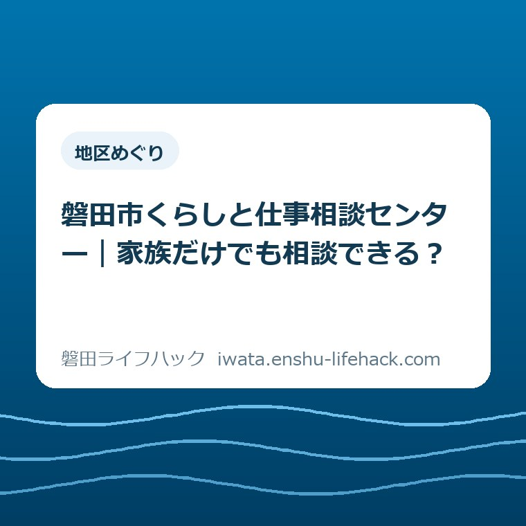
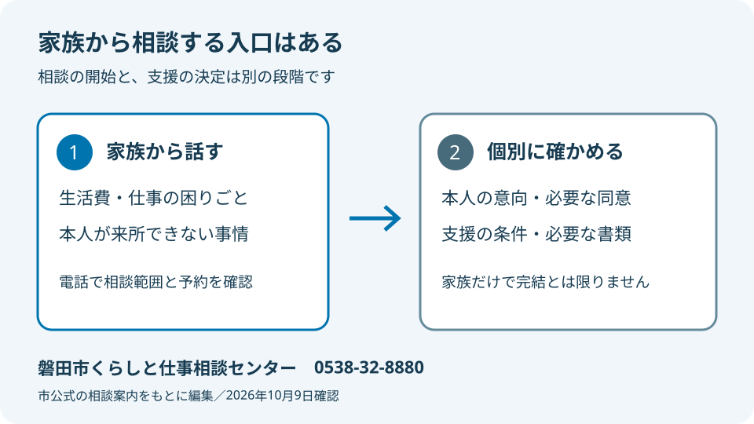
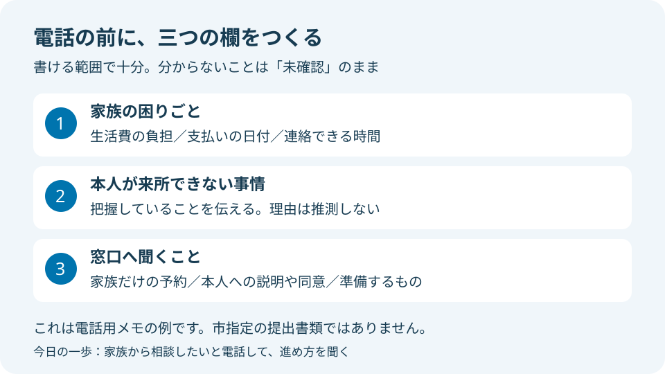

地区めぐり
磐田市くらしと仕事相談センター｜家族だけでも相談できる？

この記事の要点
Q. 本人が窓口へ行けません。家族の私だけでも相談できますか？
A. 利用できる支援は個別条件で変わります。磐田市くらしと仕事相談センターは、本人が来所できない場合などに家族からも相談できます。家族だけで申請や支援の決定まで済むという意味ではありません。まず0538-32-8880へ、家族から相談したいと電話してください。窓口は2026年11月2日から9時～16時30分です。最新情報は市公式ページで確認してください。
本人を連れて行けない家族にも、相談の入口がある
生活費の不足を補い、支払いの封筒を開け、働けない家族の様子を気にかける。家計を支える人は、窓口へ行く前から手間を払っています。相談したいと思っても、本人を連れて行く段取りまで整えるのは別の負担です。「一緒に行こう」と話す力が残っていない日もあるはずです。
支援の利用条件や手続きは、本人と世帯の状況によって変わります。その前提のうえで、磐田市には家族から話を始められる入口があります。本人が来所できないなら何も進められない、と家族だけで結論を出す必要はありません。この記事では、家族からの相談と、その先の手続きを分けて整理します。
大石浩之（磐田市／不動産業）です。私は、相談の準備で家族をさらに疲れさせたくありません。この記事で勧めるのは、家計の全資料をそろえることではなく、家族から話せる範囲を電話で確かめることです。本人を説得しきることを、電話をかけるための宿題にしない。そこから考えたいと思います。
確認日は2026年10月9日です。磐田市公式「磐田市くらしと仕事相談センター」は、2026年9月28日に更新されています。家族からの相談について明記されていることが、今回の出発点です。市の案内を根拠にできる部分と、個別に聞かなければ分からない部分を、以下で区別します。
家族相談は可能。ただし、本人に代わって全部を決める話ではない
磐田市公式の相談案内では、本人が来所できない場合などに、家族からも相談できるとされています。予約方法は電話または相談予約フォームです。本人が窓口の席に座れないことと、家族が困りごとを伝えられないことは、同じではありません。家族相談の入口を公式に示している点は、見落としたくない事実です。
相談窓口へ伝える内容は、生活費が足りない、仕事が決まらない、家賃の支払いが難しいなど、暮らしの困りごとです。制度の正式名を先に選んでから連絡する必要がある、とは市の案内には書かれていません。詳しい入口は磐田市公式の相談案内で確認できます。
一方、家族から相談できるという案内だけで、代理申請の条件まで判断することはできません。本人の意思を確かめる方法、同意や書類が必要になる場面、家族へ説明できる情報の範囲は、この案内だけでは分かりません。相談の予約ができることを、給付の受給や手続き完了の約束として受け取らないでください。
私は、最初の連絡では「本人に代わって申請したい」よりも、まず「本人が来所できず、家族の立場で困っていることを相談したい」と伝えるのがよいと考えます。何を相談したいのかが分かれば、窓口に確認する対象も絞れます。必要な同意や持ち物は、相談内容を伝えたうえで尋ねる順番です。

iプラザ3階の窓口は、11月2日から時間が変わる
磐田市くらしと仕事相談センターは、磐田市国府台57番地7のiプラザ3階、福祉相談課内にあります。相談先の電話番号は0538-32-8880です。市公式の相談案内には、2026年11月2日から窓口時間を9時～16時30分に変更する予告が掲載されています。
| 時期 | 窓口時間 |
|---|---|
| 2026年11月2日の変更前 | 8時30分～17時15分 |
| 2026年11月2日から | 9時～16時30分 |
いずれも土曜・日曜・祝日を除く案内です。変更後は朝の開始が30分遅くなり、終了が45分早くなります。従来の時刻を覚えている家族ほど、仕事の前後に寄るつもりで予定を立てないようにしたいところです。来所日は予約時に決め、必要な相談時間もその場で確かめてください。
市の制度紹介ページには、確認時点で8時30分～17時15分の表示も残っています。この記事では、変更日が明記された相談センターの案内を優先しました。11月以降の予約は、変更後の時間を前提に相談してください。電話の受付時間も窓口と同じ扱いになるかは、電話をした際に確認すると確実です。
私は、この変更を単なる時刻の書き換えとして見ていません。家族が動ける時間と窓口が開く時間が重ならなければ、相談のために仕事や家事の調整が必要になります。だから、iプラザまで出向く前に、家族相談の方法と予約を一本の電話で確かめる段取りを勧めます。
家族が話せることと、まだ分からないことを分ける
家族からの最初の相談では、把握している困りごとと、本人にしか分からない情報を分けて伝えると話を整理できます。以下は市指定の提出書類ではなく、電話のために私が勧めるメモです。家計を全部調べ切るための一覧ではありません。分からない欄は空けたまま、確認方法を相談してください。
一つ目は、生活への影響です。「家賃の支払日が近い」「家族が生活費を補っている」など、何が続かなくなりそうかを短く書きます。金額が分かるなら金額を、期限があるなら日付を添えます。本人の収入や預金の全体が分からなくても、家族自身が実際に負担している支出は別に説明できます。
二つ目は、来所できない事情です。病気、移動の難しさ、家族が付き添える日程がないなど、把握している事情を伝えます。診断名や本人の気持ちを推測して埋める必要はありません。「理由を本人から十分に聞けていない」と言うほうが、家族の想像を事実として扱うより正確です。
三つ目は、家族が続けられる範囲です。連絡を受けられる曜日や時間、来所に付き添えるかどうかをメモします。自分が働く時間や子どもの世話を、相談のために無制限に空けられるわけではありません。本人の困りごとと同じように、支える側の日程も相談の材料にしてよいと私は考えます。
家族の見立てと本人の希望は、同じ欄に書かないほうが整理しやすくなります。「働いてほしい」は家族の願いで、「どんな仕事を希望するか」は本人に確認する話です。本人の希望を決めつけずに共有する考え方は、磐田市の人生会議と家族の備えでも扱いました。相談の分野が違っても、この区別は役立ちます。
訪問対応や支援の条件は、電話で個別に確認する
磐田市の相談案内には、特別な事情で来所が難しい場合、自宅などへの訪問にも対応すると記載されています。ただし、訪問を希望すれば必ずその日時に来てもらえる、とまでは書かれていません。家族から来所困難な事情を伝え、訪問の相談ができるか、どのように調整するかを確かめてください。
本人が家族以外と会うことを負担に感じている場合は、その事情も窓口に伝える材料になります。家族だけで訪問日を決めて本人へ突然知らせるより、まず進め方を尋ねるほうがよいと私は考えます。訪問が適切かどうかをこの記事から決めることはできません。本人への説明の仕方も含め、相談先に確認する話です。
磐田市公式「生活困窮者自立支援制度」では、一部の事業に年齢、資産、収入の要件があると案内しています。相談できることと、特定の支援を使えることは別です。家族が生活費を出しているから対象外だろう、収入が減ったから必ず給付を受けられるだろう、と入口で判断を固定しないようにしてください。
制度紹介には、家計の整理を支える事業や、すぐに働くことが難しい人の就労準備を支える事業も掲載されています。どの支援を組み合わせるかは個別の相談で考えることです。制度名を調べて家族だけで当てはめるより、困りごとを伝えて適用条件を確認する順番が現実的だと私は考えます。
生活保護費の追加給付を調べている場合は、磐田市の生活保護費追加給付の案内を別に確認してください。今回の家族相談の入口と、過去の支給に関する追加給付は異なる話です。似た「生活の支援」という言葉で一つの手続きだと思わず、何についての相談かを伝え分けます。
良い点と、注文したい点
磐田市の家族相談の案内で良い点は、本人の来所を入口の唯一の形にしていないことです。家族が先に話せると分かれば、本人を連れ出す準備が整わない段階でも連絡先を持てます。電話とフォームの予約方法も示され、来所困難な場合の訪問にも触れています。相談へたどり着く道を複数示す案内は、家族の移動や調整の負担に目を向けたものだと私は受け止めます。
私は、家族から話せると公式に明示したことを評価します。支援の内容だけが詳しくても、誰が最初に連絡してよいのか分からなければ、家族の手は止まります。入口の一文は小さく見えても、仕事を休む前に動けるかどうかを左右します。市の案内を生活の言葉に置き換えるなら、「まず家族が困りごとを伝える道がある」ということです。
注文したい点は、家族だけで相談するときの準備が、もう少し具体的に見えることです。私が確認した案内だけでは、本人への説明、同意の扱い、最初に持って行くものまで判断できません。個別対応が必要な部分を一律に決めてほしいのではありません。「予約時にこの点を聞いてください」という短い補足があれば、家族が迷う時間を減らせると考えます。
受付時間の変更についても、私は関連ページで案内がそろうことを望みます。相談センターのページと制度紹介のページを別々に読む家族が、違う時刻を覚えてしまう可能性があるからです。担当者個人への注文ではなく、出向く人の予定を組みやすくするための要望です。当面は変更予告のあるページで日付を確認するのが確実です。
大石の視点：家族の持ち出しで、相談の遅れを埋め続けない
私は、家族が生活費を補っていることを「まだ何とかなっている」と片づけたくありません。支払いが済んでいても、支えた人の家計からお金が減り、予定を動かす時間も使われています。制度の話を始める前に、その負担を数える必要があります。相談できる入口があるなら、家族の我慢を入口までの通行料にしない。この判断が私の立場です。
私が迷うのは、本人の意思を大切にすることと、支える家族の限界を伝えることの順番です。本人に無断で全部を進めてよいとは思いません。けれど、本人が話せるようになるまで、家族の困りごとを一切外へ出せないとも考えません。だから最初の電話では、本人がどこまで知っているかも含めて、相談の進め方を確かめたいのです。
これは私が考える段取りであり、窓口で実際に言われた話や、特定の相談者の体験ではありません。もし私が家族のメモを組み立てるなら、最初に置くのは「制度を使いたい」ではなく、「今、家族が何を負担しているか」です。その次に、本人が来所できない事情を書く。給付の答えが出なくても、次に誰へ何を伝えるかが分かれば、電話をした意味はあります。
住まいの費用も重なっているときは、家の売却などの大きな判断を家計相談と同時に急ぐ必要はないと私は考えます。空き家や実家について家族で整理する材料は、磐田市の空き家相談会に向けた家族メモに分けてあります。今日の相談の目的を、家族のすべての問題を一度に決めることに広げないでください。
対案・結論：今日は家族から話せる範囲を一本の電話で聞く
磐田市くらしと仕事相談センターへ、家族から相談したいと電話することが、今日できる一歩です。電話番号は0538-32-8880です。家計の資料を完成させる前に、本人が来所できない事情と家族の困りごとを短く伝え、家族だけの相談予約と必要な準備を確認します。受付時間外なら、次の受付時間に連絡するための一文を残します。
「磐田市で暮らす家族の生活費と仕事のことで相談したいです。本人は来所が難しい状況です。まず家族だけで相談できますか。本人への説明や同意、準備するものは、どの段階で必要になりますか」
この言い方は電話の例です。家庭の状況に合う部分だけ使ってください。本人と相談について話していないなら、その点を隠さず伝えます。詳しい個人情報を伝える前に、どこまで説明すればよいかを尋ねることもできます。市が秘密を守ると案内していることと、本人への連絡がどう進むかは別の確認事項です。

返事を聞いたら、相談予定日、次に用意するもの、次に連絡する人をメモします。説明を聞いても分からない点があれば、「家族の私がすることは何ですか」と役割を聞き直すと整理できます。すべての制度の説明を覚えることより、次の行動を一つ取り違えずに持ち帰ることを、私は勧めます。
生活費に関する相談先を広く見直す場合は、生活費に困ったときの相談ガイドも入口になります。ただ、今回の問いは家族だけで話し始められるかです。相談先を増やして比較し続ける前に、公式に家族相談を案内するセンターへ確認し、家族が抱える準備の量を減らしてください。
家族からの相談についてのFAQ
本人が来所できないとき、家族だけでも相談できますか？
磐田市くらしと仕事相談センターは、本人が来所できない場合などに家族からも相談できると案内しています。ただし、代理申請や支援の決定まで家族だけで完了するとは限りません。0538-32-8880へ事情を伝え、相談の予約、本人への説明や同意、準備するものを確認してください。最新情報は市公式の相談案内で確認できます。
本人が外出できない場合、訪問してもらえますか？
磐田市の案内には、特別な事情により来所が難しい場合は、自宅などへの訪問にも対応すると記載されています。希望した日時や方法で必ず訪問されるという案内ではありません。来所できない事情を伝え、訪問対応を相談できるか、本人への説明をどう進めるかをセンターに確認してください。個別の対応は相談先が判断します。
11月2日から相談窓口の時間はどう変わりますか？
2026年11月2日から、磐田市くらしと仕事相談センターの窓口は9時～16時30分になります。変更前は8時30分～17時15分で、土曜・日曜・祝日を除きます。所在地は国府台57番地7のiプラザ3階です。電話の受付時間や予約日の相談時間も含め、来所前に市公式の最新案内とセンターで確認してください。
参考にした公式情報
- 磐田市くらしと仕事相談センター／磐田市（2026年9月28日更新・2026年10月9日確認）
- 生活困窮者自立支援制度／磐田市（2026年10月9日確認）
最終確認日：2026-10-09 ／ 本記事は公表情報と執筆者の見解を分けて記載しています。制度・数値・公開状況は変更される場合があるため、個別の支援利用や手続きはセンターへ、法律などの専門判断は専門家へ相談してください。最新情報は磐田市公式ページでご確認ください。